POSTUPAK · RADNI LIST V10 · FLUIDSIM
Postupak V10 · vježbe V27 i V28 · 4 sata
Postupak V10 — dijagnostika kvara i proračun hidrauličkog sustava u FluidSIM-u
Cijeli radni list V10 korak po korak: traženje kvara u elektropneumatskom sklopu sa samodržanjem uz pripremljene kvarove u FluidSIM-P, te provjera proračuna hidrauličke preše HP-1 simulacijom u FluidSIM-H. Uz svaki korak su snimke zaslona i potpuna rješenja.
- nacrtati ispravan sklop sa samodržanjem i po bojama vodova pratiti gdje teče struja
- unijeti kvar u shemu i iz simptoma i „mjerenja” zaključiti o uzroku
- nacrtati hidraulički sklop s agregatom, razvodnikom 4/3 i cilindrom u FluidSIM-H
- provjeriti simulacijom brzine, vremena hoda i tlakove iz proračuna
- spremiti sheme, popuniti zapis simulacije i predati rad
O postupku
Ova stranica je postupak za radni list V10: sve što se radi na računalu, od nove sheme do predaje, redom kojim je zadano. Tekst zadatka, sheme, pitanja i rješenja isti su kao na stranicama vježbi V27 Dijagnostika i uklanjanje kvara i V28 Proračun hidrauličkog sustava; ovdje su dopunjeni koracima u FluidSIM-u i rezultatima simulacije.
Rješenja su skrivena ispod svakog pitanja. Najprije riješite sami, a onda otvorite Prikaži rješenje i usporedite.
Gotove sheme (rješenja) za FluidSIM
- PIH_V27_rjesenje_v01.ct — dio A: ispravan sklop sa samodržanjem, STOP i graničnim prekidačem 1S2
- PIH_V27_kvar_vodic_K1_1Y1_v01.ct — dio A: kvar 1 — prekinut vodič između K1 i 1Y1
- PIH_V27_kvar_samodrzanje_mirni_v01.ct — dio A: kvar 2 — samodržanje na mirnom kontaktu, relej titra
- PIH_V28_rjesenje_v01.ct — dio B: preša HP-1, agregat 22 l/min i 16 MPa, razvodnik 4/3 tandem, cilindar Ø80/50 × 300, dijagram
- PIH_V28_zatvoreni_srednji_v01.ct — dio B: isti sklop sa zatvorenim srednjim položajem (pitanje 7)
Datoteke se otvaraju u FluidSIM-P 4.2 i FluidSIM-H 4 (File → Open). Snimke zaslona napravljene su u FluidSIM-P 4.2 i FluidSIM-H 4.2 s engleskim sučeljem. Osnove rada u FluidSIM-u (nova shema, knjižnica, crtanje vodova, provjera, simulacija, dijagram put–korak) opisane su u Postupku V01, odjeljak 0.
0 · Prije početka
- File → New (Ctrl + N) otvara novu shemu; Window → Tile Vertically (Shift + F4) postavlja shemu i knjižnicu jednu uz drugu.
- Elemente povucite iz knjižnice na shemu i dvoklikom otvorite njihove dijaloge. Vod crtajte povlačenjem od priključka do priključka; povlačenjem na postojeći vod nastaje račvanje.
- Oznake (1A1, 1V1, 1S1, 0Z1 …) upisuju se elementom Text iz skupine Miscellaneous (uključite Frame Text).
- Execute → Check Superficially (F6) provjerava crtež; Start (F9), Pause (F8), Stop (F5).
- Ručno tipkalo aktivirate klikom mišem (dok držite tipku miša); Shift + klik zadrži ga pritisnutim. Ručica sa zasunom prebacuje se jednim klikom i ostaje u položaju.
- Granični ventil veže se uz cilindar oznakom: dvoklik na cilindar → kartica Actuating Labels → oznaka (npr. 1S2) i položaj na hodu (od–do u mm); ista oznaka upiše se dvoklikom na valjak graničnog ventila (Mechanical connection → Label).
- Dijagram put–korak: iz Miscellaneous povucite State Diagram i na njega povucite cilindre i ventile čije stanje želite pratiti.
Električni dio u FluidSIM-u
Električni dio crta se u istoj shemi kao pneumatski. Elementi su u knjižnici u skupini Electrical controls: Power Supply (+24V i 0V), Relays (relej, svitak ventila Valve solenoid), Switches → Manually Operated (tipkala), General Switches (radni Make switch i mirni Break switch kontakt), Proximity Switches (senzori) i Measuring instruments (signalna svjetiljka Indicator light). Svaka staza u našim shemama ima svoj simbol +24V i 0V — FluidSIM ih smatra istom sabirnicom, a vodovi se ne križaju.
Veza električnog i pneumatskog dijela ostvaruje se oznakom: dvoklik na svitak u stazi → Label Y1, i dvoklik na lijevi kraj razvodnika (elektromagnetski aktuator) → Label Y1. Isto vrijedi za relej i njegove kontakte (K1) te za senzor i oznaku na cilindru (B1). Brojeve uz staze i vodove (1, 2, … kraj +24V i na vodovima) FluidSIM dodjeljuje sam, redom kojim su elementi stavljani u shemu; oni nisu nužno jednaki brojevima staza iz zadatka.
Shift + klik zadrži tipkalo ili ručicu pritisnutim (ponovni Shift + klik otpušta).
FluidSIM-H
Dio B radi se u hidrauličkoj inačici programa. Knjižnica sadrži hidrauličke elemente, tlak se prikazuje u MPa (16 MPa = 160 bar), a agregat je jedan element s crpkom i sigurnosnim ventilom.
Dio A · V27 Dijagnostika i uklanjanje kvara
Zadatak
Na kraju transportne trake potiskivač prebacuje pakete na bočnu traku. Cilindar 1A (Ø40/16 mm, hod 160 mm) upravljan je monostabilnim razvodnikom 5/2 s elektromagnetom 1Y1. Pritisak na S1 uključuje relej K1 sa samodržanjem, cilindar gura paket, a na kraju hoda granična sklopka 1S2 svojim mirnim kontaktom prekida samodržanje i cilindar se vraća. S2 je STOP, a žaruljica H1 preko senzora 1B1 javlja da je potiskivač u početnom položaju. Tlak je 6 bar, napon 24 V DC.
Sklop je bio ispravan, a zatim je u njemu pripremljen jedan ili više kvarova. Operater javlja samo ono što vidi, npr. „potiskivač ne radi“. Vaš je zadatak kvar pronaći i otkloniti sustavnim postupkom, uz što manje rastavljanja, i o svakom kvaru napisati zapisnik. Nasumično mijenjanje dijelova ili ponovno spajanje cijelog sklopa nije rješenje — u pogonu to znači dulji zastoj i trošak rezervnih dijelova.
Sigurnost pri radu
Pažnja
Pri traženju kvara sklop je pod naponom i pod tlakom jer se bez toga ne može mjeriti. Zato: mjerite samo jednom rukom i samo ispitnim vrhovima, ne premošćujte kontakte vodičem „da vidite hoće li krenuti“ i nikad ne posežite u hod cilindra. Ručno pomoćno upravljanje na razvodniku pokreće cilindar bez obzira na električni dio — prije uporabe glasno najavite gibanje. Cijevi odspajajte samo kad je tlak ispušten. Svaki zahvat (zamjena vodiča, pritezanje, namještanje) izvodite bez napona i bez tlaka.
Shema
U ispravnom sklopu napon u mjernim točkama ima vrijednosti iz tablice. Kvar se traži usporedbom izmjerenog s očekivanim: u strujnoj stazi napon je 24 V sve do mjesta prekida, a iza njega je 0 V.
| Mjerna točka | U mirovanju | S1 pritisnut, cilindar se izvlači | Na kraju hoda (1S2 djeluje) |
|---|---|---|---|
| MT1 (+24 V iza izvora) | 24 V | 24 V | 24 V |
| MT2 (iza S2) | 24 V | 24 V | 24 V |
| MT3 (iza S1 ‖ K1) | 0 V | 24 V | 0 V (24 V dok se S1 drži) |
| MT4 (iza 1S2, svitak K1) | 0 V | 24 V | 0 V |
| MT5 (svitak 1Y1) | 0 V | 24 V | 0 V |
| MT6 (žaruljica H1) | 24 V | 0 V | 0 V |
| P1 / P2 / P3 | 6 / 0 / 6 bar | 6 / 6 / 0 bar* | 6 / 0 / 6 bar |
* Tijekom gibanja tlakovi ovise o prigušenju i opterećenju; u krajnjem izvučenom položaju P2 = 6 bar, P3 = 0 bar.
Vježba se radi u FluidSIM-u
Koraci postupka vježbe koji se odnose na spajanje na didaktičkoj ploči i mjerenje štopericom ili manometrom izvode se u simulaciji. Gdje simulacija ne može pokazati pojavu iz pokusa, to je napisano uz korak.
A1 · Ispravni sklop V27.1 u FluidSIM-u
- Pneumatski dio: dvoradni cilindar, monostabilni razvodnik 5/2 s elektromagnetom i oprugom (Solenoid Operated → 5/2-way solenoid valve) i izvor zraka; vodovi 1 → izvor, 4 → strana klipa, 2 → strana klipnjače. Cilindar: najprije Parameters (klip 40 mm, klipnjača 16 mm, hod 160 mm), zatim Actuating Labels: 1B1 na 0–1 mm i 1S2 na 159–160 mm; Configuration → Label 1A. Oznaka elektromagneta: dvoklik na mali kružić lijevo od razvodnika → Valve solenoid connection → 1Y1.
- Staza 1: +24V → tipkalo STOP S2 (Pushbutton (break)) → tipkalo START S1 (Pushbutton (make)) paralelno s radnim kontaktom K1 → mirni kontakt 1S2 (Break switch, Triggered by: Limit Switch) → svitak releja K1 → 0V.
- Staza 2: radni kontakt K1 → svitak 1Y1. Staza 3: 1B1 (Make switch, Reed contact) → signalna svjetiljka H1 (Indicator light). F6 → No superficial errors detected. Shemu spremite — to je ispravni sklop za usporedbu.
Mjerne točke u FluidSIM-u
Crveni vod u simulaciji znači da kroz njega teče struja, pa se po bojama vidi gdje je 24 V, a gdje 0 V — to zamjenjuje mjerenje MT1–MT6 multimetrom. Za brojčane vrijednosti mogu se u stazu ugraditi voltmetri (Measuring instruments → Voltmeter), ali za traženje prekida dovoljna je boja vodova.
A2 · Simulacija ispravnog sklopa
- Start (F9): u mirovanju H1 svijetli preko 1B1, ostale staze su bez struje (Slika A2.1).
- Kratko pritisnite S1: K1 privuče i drži se preko kontakta K1 paralelno sa S1, 1Y1 izvlači cilindar (Slika A2.2).
- Na kraju hoda 1S2 otvori stazu 1, K1 otpadne, opruga vrati razvodnik i cilindar se uvlači (Slika A2.3); u početnom položaju opet svijetli H1. Provjerite i STOP: S2 tijekom izvlačenja prekida samodržanje.
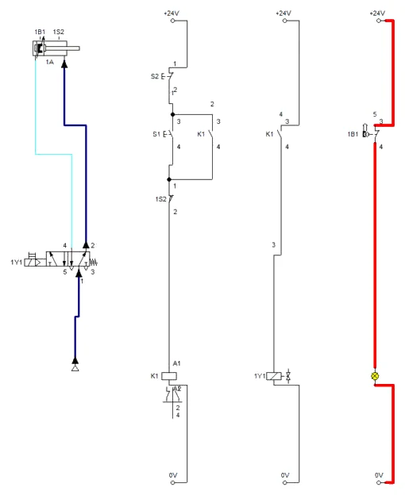
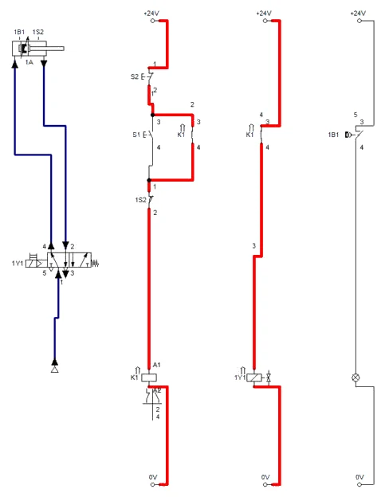
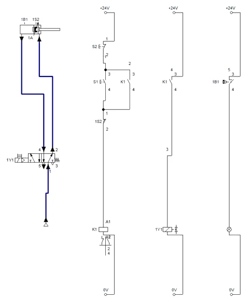
A3 · Pripremljeni kvarovi
- Kvar 1 (pitanje 1): shemu kopirajte u novu shemu i obrišite vod između radnog kontakta K1 i svitka 1Y1 — to je prekinut vodič. Start, S1: K1 privuče i drži, ali staza 2 je crvena samo do kontakta K1, 1Y1 je bez struje i cilindar miruje (Slika A3.1). Datoteka PIH_V27_kvar_vodic_K1_1Y1_v01.ct.
- Kvar 2 (pitanje 3): u ispravnoj shemi kontakt samodržanja K1 zamijenite mirnim kontaktom (Break switch, oznaka K1). Već pri pokretanju simulacije relej titra: staza 1 je naizmjence pod naponom (K1 privlači) i bez napona (mirni kontakt K1 se otvorio), a 1Y1 dobiva samo kratke impulse (Slike A3.2 i A3.3). Datoteka PIH_V27_kvar_samodrzanje_mirni_v01.ct.
- Za svaki kvar ispunite zapisnik kao na stolu: simptom, pretpostavka, „mjerenje” (koji je vod crven, a koji nije), uzrok, zahvat.
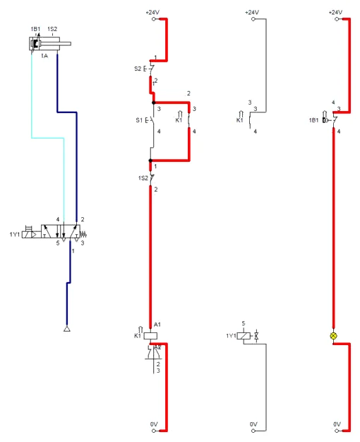
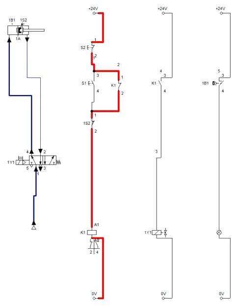
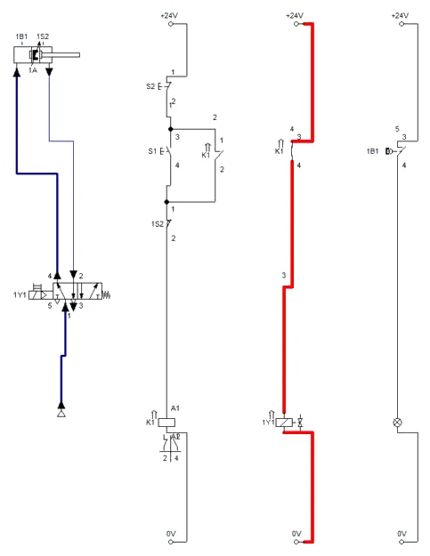
Simulacija i stvarni sklop
U FluidSIM-u razvodnik stigne odgovoriti na kratke impulse, pa klipnjača „puže” prema kraju hoda i trza uz 1S2. Na stvarnom stolu relej titra mnogo brže nego što razvodnik može prebaciti, pa se cilindar najčešće ne pomakne — to opisuje pitanje 3. Pneumatski kvar iz pitanja 4 (zatvoren prigušni ventil) traži se manometrom na stolu.
A4 · Pitanja i zadaci
1. Pritisnete S1: relej K1 privuče i drži, utikač 1Y1 ne svijetli, cilindar miruje. Izmjerili ste MT5 = 0 V. Gdje je kvar i kojim ćete ga mjerenjem potvrditi?
Prikaži rješenje
Staza 1 je ispravna jer K1 drži. U stazi 2 napon na svitku 1Y1 je 0 V, pa je prekid između +24 V i MT5: radni kontakt K1 u stazi 2 ili vodič do njega. Potvrda: izmjeriti napon na gornjem priključku kontakta K1 (mora biti 24 V) i na donjem (0 V znači da kontakt ne zatvara). Ako je na donjem priključku 24 V, a na MT5 0 V, prekinut je vodič između kontakta i svitka.
U FluidSIM-u
U simulaciji (Slika A3.1) vidi se isto: staza 1 vodi, a u stazi 2 struja dolazi samo do kontakta K1.
2. Cilindar se izvlači, ali se na kraju hoda ne vraća. Utikač 1Y1 i dalje svijetli. Navedite dva moguća uzroka i kako ćete ih razlikovati.
Prikaži rješenje
Samodržanje K1 ne prekida se jer 1S2 ne otvara. Uzrok može biti mehanički — sklopka je pomaknuta pa je klipnjača ne doseže — ili električni, npr. spojen je radni umjesto mirnog kontakta ili je kontakt premošćen. Razlika: ako pri ručnom pritisku na polugu 1S2 napon na MT4 padne na 0 V, sklopka je ispravno spojena i treba je samo namjestiti; ako ne padne, kvar je u spoju.
3. Nakon uključivanja napajanja relej K1 brzo titra (zuji), a cilindar ne radi. Koji kvar u spoju izaziva takvo ponašanje?
Prikaži rješenje
Kontakt samodržanja K1 spojen je kao mirni umjesto kao radni. U mirovanju mirni kontakt zatvara stazu i relej privuče; tada se isti kontakt otvara i relej otpusti; kontakt se ponovno zatvori i tako redom. Relej titra frekvencijom određenom vremenom privlačenja i otpuštanja. Mjerenjem na MT3 vidi se napon koji „skače“, a multimetar pokazuje nestabilnu vrijednost.
U FluidSIM-u
U simulaciji (Slike A3.2 i A3.3) staza 1 i staza 2 naizmjence su pod naponom — relej titra.
4. Utikač 1Y1 svijetli, razvodnik se čujno prebaci, ali cilindar se ne giba. Ispitni manometar pokazuje P2 = 6 bar, P3 = 5,8 bar. Što je uzrok?
Prikaži rješenje
Tlak postoji s obje strane klipa, a strana klipnjače se ne rasterećuje. Zrak iz komore klipnjače ne može izaći: zatvoren je jednosmjerni prigušni ventil u vodu 2 (prigušenje odlaznog zraka) ili je začepljen prigušivač na odzraci 3. Sile su gotovo uravnotežene pa se klip ne pomakne. Nakon otvaranja prigušnog ventila cilindar radi.
5. Računski zadatak: staza ima 16 mogućih mjesta kvara (kontakti, stezaljke i vodiči). Koliko mjerenja najviše treba ako mjerite redom od izvora, a koliko metodom polovljenja?
Prikaži rješenje
Redom od izvora u najgorem slučaju treba 15 mjerenja (nakon 15. zna se i za 16. mjesto). Polovljenjem svako mjerenje prepolovi područje: 16 → 8 → 4 → 2 → 1, dakle log2 16 = 4 mjerenja. Kod duljih staza razlika je još veća, npr. 64 mjesta: 63 prema 6 mjerenja.
6. Računski zadatak: na svitku 1Y1 (24 V, 2,5 W) izmjerili ste 21,5 V dok je na MT1 24,0 V. Koliki je otpor lošeg spoja u stazi? Je li to razlog za zahvat?
Prikaži rješenje
Struja svitka I = 2,5 / 24 ≈ 0,104 A. Pad napona na putu do svitka ΔU = 24,0 − 21,5 = 2,5 V. Otpor R = ΔU / I = 2,5 / 0,104 ≈ 24 Ω. Ispravan kontakt i vodič imaju otpor manji od 1 Ω, pa 24 Ω upućuje na oksidiran ili olabavljen spoj. Razvodnik još radi, ali pri nižem naponu mreže ili zagrijanom svitku može prestati prebacivati — spoj treba očistiti ili zamijeniti.
7. Računski zadatak: ispitujete propuštanje. Dio sustava volumena 10 l zatvorite pri 6,0 bar, a nakon 2 minute manometar pokazuje 5,4 bar. Koliko je propuštanje u Nl/min i koliko je to slobodnog zraka godišnje (16 h dnevno, 250 dana)?
Prikaži rješenje
Q = V · Δp / (pa · t)
Q = 10 l · 0,6 bar / (1,013 bar · 2 min) ≈ 2,96 Nl/min. Godišnje: 2,96 · 60 · 16 · 250 ≈ 710 000 Nl ≈ 710 m³ slobodnog zraka, koje kompresor mora proizvesti ni za što. Propuštanje se traži sluhom, sprejem za otkrivanje propuštanja ili ultrazvučnim detektorom.
8. Zašto se nakon otklanjanja kvara provjerava cijeli ciklus, a ne samo dio koji je bio neispravan?
Prikaži rješenje
U sklopu može biti više kvarova, a prvi može skrivati drugi (npr. kad se cilindar ne izvlači, ne vidi se da ni povratak na 1S2 ne radi). Osim toga, i sam zahvat može unijeti novu pogrešku — zamijenjen vodič na krivoj stezaljci, neučvršćena cijev. Tek provjera svih funkcija, uključujući STOP i početni položaj, potvrđuje da je sklop spreman za rad.
9. Dopunite shemu na slici V27.1: precrtajte stazu 1 za kvar u kojem je kontakt samodržanja K1 spojen na mirni umjesto na radni kontakt, a zatim za kvar u kojem je granična sklopka 1S2 spojena na radni kontakt. Za oba slučaja upišite očekivani napon na MT3 i MT4 u mirovanju.
Prikaži rješenje
Samodržanje na mirnom kontaktu: u paraleli s S1 crta se mirni kontakt K1 (poluga preko kvačice). U mirovanju je taj kontakt zatvoren, pa MT3 i MT4 dobivaju 24 V, relej privuče, kontakt se otvori i napon padne — na MT3 i MT4 napon titra između 0 i 24 V. Granična sklopka na radnom kontaktu: u seriji ispred svitka crta se radni kontakt 1S2. U mirovanju je MT3 = 0 V (S1 nije pritisnut), a pri pritisku na S1 MT3 = 24 V, dok MT4 ostaje 0 V jer je radni kontakt 1S2 otvoren dok klipnjača ne dođe do sklopke — sklop se uopće ne pokreće.
U FluidSIM-u
Prvi slučaj (samodržanje na mirnom kontaktu) je u datoteci PIH_V27_kvar_samodrzanje_mirni_v01.ct (Slike A3.2 i A3.3).
Dio B · V28 Proračun hidrauličkog sustava
Zadatak
Za prešu HP-1 za utiskivanje ležajeva i ravnanje osovina zadani su zahtjevi: sila prešanja najmanje 75 kN, hod 300 mm, brzina izvlačenja najmanje 70 mm/s, najveći radni tlak 160 bar. Agregat pokreće asinkroni elektromotor 1450 min⁻¹. Upravljanje je razvodnikom 4/3 sa srednjim položajem „tandem“ (P spojen s T, A i B zatvoreni), tako da crpka u mirovanju tlači u spremnik gotovo bez tlaka.
Treba izračunati: promjer cilindra (klipnjača Ø50 mm zadana je zbog izvijanja), istisninu crpke, stvarne brzine i vremena hoda, povratni protok, snagu motora, volumen spremnika i unutarnje promjere vodova. Uzmite hidrauličko-mehanički stupanj djelovanja cilindra 0,95, volumetrijski stupanj djelovanja crpke 0,95 i ukupni stupanj djelovanja agregata 0,8. Na kraju se na vježbenoj ploči mjerenjem vremena hoda provjerava odnos brzina izvlačenja i uvlačenja.
Sigurnost pri radu
Pažnja
Hidraulički sustav radi s tlakovima i do stotinu puta višima nego pneumatski. Crijeva spajajte i odspajajte samo kad agregat ne radi i kad je tlak rasterećen (manometar na 0 bar). Mlaz ulja iz oštećenog crijeva pod tlakom može probiti kožu — oštećeno mjesto nikad ne tražite rukom. Prije uključivanja agregata provjerite da su sve brze spojnice do kraja utaknute. Prolijevano ulje odmah pobrišite; na mokrom podu se kliže.
Shema
A = π · D² / 4 F = p · A · ηhm Q = V · n · ηv v = Q / A P = p · Q / η
Za praktično računanje korisni su oblici s jedinicama iz pogona: F [N] = 10 · p [bar] · A [cm²]; v [m/s] = Q [l/min] / (6 · A [cm²]); P [kW] = p [bar] · Q [l/min] / 600. Brzine u vodovima uobičajeno se biraju do 1 m/s u usisnom, 3–5 m/s u tlačnom i 2–3 m/s u povratnom vodu; to su preporuke iskustva, ne propisane granice.
Vježba se radi u FluidSIM-u
Koraci postupka vježbe koji se odnose na spajanje na didaktičkoj ploči i mjerenje štopericom ili manometrom izvode se u simulaciji. Gdje simulacija ne može pokazati pojavu iz pokusa, to je napisano uz korak.
B1 · Shema preše HP-1 u FluidSIM-H
- Pokrenite FluidSIM-H (hidraulika) — izbornici i rad su isti kao u FluidSIM-P. Tlak se u FluidSIM-H prikazuje u MPa (1 MPa = 10 bar), protok u l/min.
- Agregat: element Pump unit (simplified representation) — crpka s ugrađenim sigurnosnim ventilom. Dvoklik: Operating Pressure 16 MPa (160 bar), Flow 22 l/min (stvarni protok iz pitanja 2), Internal leakage 0. Uz njega spremnik (Tank) za povratni vod.
- Razvodnik 4/3: konfigurabilni razvodnik, dvoklik → Configure Way Valve. Lijevo ručica (Manually) bez opruge, položaji: lijevi P→A i B→T, srednji tandem (P→T, A i B zatvoreni), desni križni (P→B, A→T); početni položaj srednji. Hydraulic resistance smanjite na 0.0002 MPa/(l/min)²: zadanih 0,01 daje pri 22 l/min pad tlaka 0,01 · 22² = 4,84 MPa, tj. gotovo 50 bar već u mirovanju, što ne odgovara stvarnom razvodniku.
- Dvoradni cilindar: Parameters klip 80 mm, klipnjača 50 mm, hod 300 mm; oznaka 1A. Vodovi: P → agregat, T → spremnik, A → strana klipa, B → strana klipnjače. Manometar (Pressure gauge) spojite na tlačni vod agregata.
- Iz Miscellaneous povucite State Diagram, na njega povucite cilindar i odaberite Position i Velocity. Dvoklik na dijagram → Fixed interval, Start 0, End 25 s, da stane cijeli ciklus. F6 → No superficial errors detected.
Brojevi iz proračuna u simulaciji
Shema u FluidSIM-u koristi rezultate računskog dijela: cilindar Ø80/50 iz pitanja 1, protok 22 l/min iz pitanja 2 i tlak sigurnosnog ventila 160 bar iz zadatka. Simulacija zato provjerava proračun brzina i vremena hoda, a na vježbenoj ploči isto se provjerava mjerenjem.
B2 · Simulacija hoda i provjera proračuna
- Start (F9). Razvodnik je u srednjem tandem položaju: crpka tlači u spremnik, manometar pokazuje samo 0,10 MPa (1 bar), cilindar miruje (Slika B2.1).
- Shift + klik na lijevo polje razvodnika zadrži ručicu u lijevom položaju: ulje teče P→A, cilindar se izvlači brzinom oko 0,073 m/s, a manometar pokazuje samo 0,12 MPa — bez opterećenja tlak određuju samo otpori (Slika B2.2).
- Na kraju hoda klip stane, tlak naraste do 16,00 MPa (160 bar) i otvara se sigurnosni ventil u agregatu: cijeli protok crpke ide preko ventila u spremnik (Slika B2.3). U tom trenutku cilindar bi prešao sa silom od oko 76 kN (pitanje 1).
- Ponovni Shift + klik vrati ručicu u srednji položaj: A i B su zatvoreni pa cilindar ostaje izvučen, a crpka se rastereti na 0,10 MPa (Slika B2.4).
- Shift + klik na desno polje: P→B, A→T, cilindar se uvlači brzinom oko 0,12 m/s. Manometar pokazuje 0,53 MPa — više nego pri izvlačenju, jer iz komore klipa kroz razvodnik izlazi 36 l/min (pitanje 3), a taj protok stvara protutlak koji se preko omjera površina prenosi na stranu klipnjače (Slika B2.5).
- Zaustavite simulaciju i očitajte dijagram (Slika B2.6): izvlačenje traje oko 4,1 s, uvlačenje oko 2,5 s, omjer vremena 4,1 / 2,5 ≈ 1,64 = A / Ar = 50,27 / 30,63. Kratki vršci brzine u trenutku prebacivanja razvodnika prijelazna su pojava simulacije.
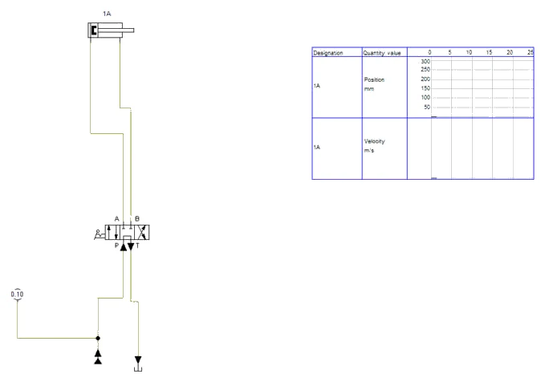
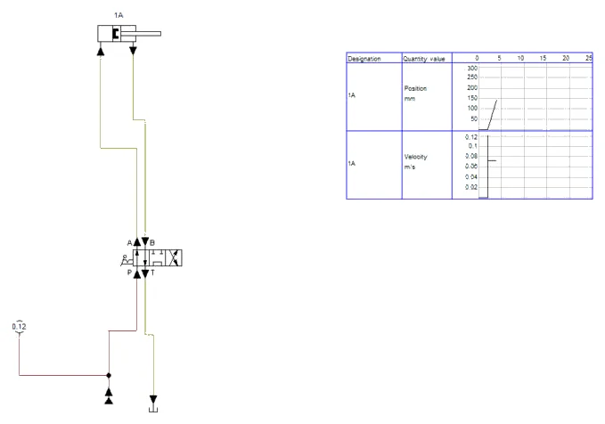
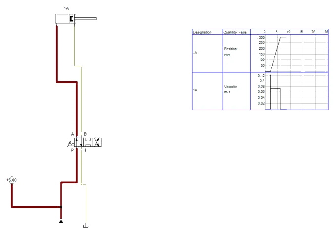
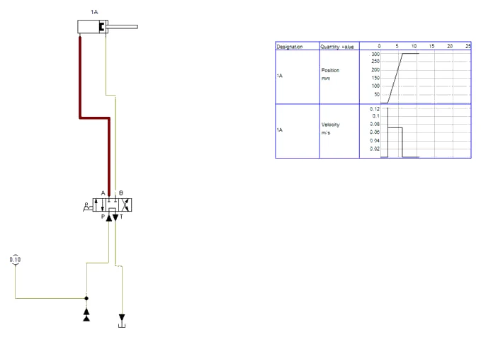
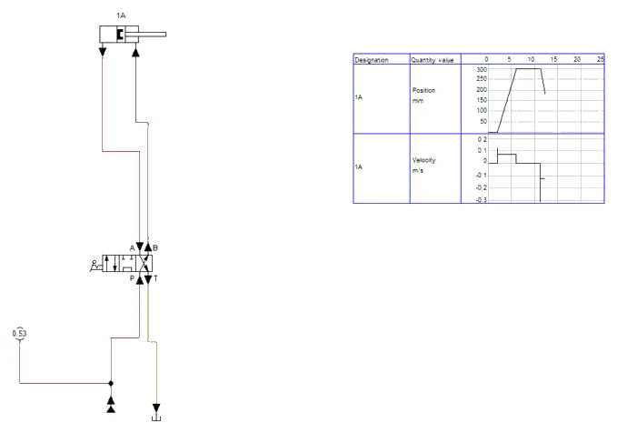
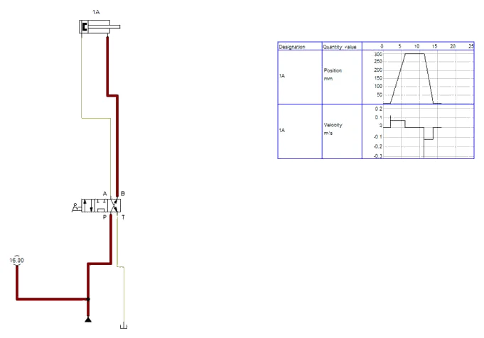
B3 · Srednji položaj sa zatvorenim priključcima
- Za pitanje 7: u dijalogu razvodnika srednji položaj zamijenite položajem sa zatvorenim svim priključcima (prvi simbol na popisu srednjeg polja). Datoteka PIH_V28_zatvoreni_srednji_v01.ct.
- Start: cilindar miruje, a manometar odmah pokazuje 16,00 MPa — crpka nema kamo potisnuti ulje osim preko sigurnosnog ventila (Slika B3.1). To je snaga od oko 5,9 kW koja se u mirovanju neprekidno pretvara u toplinu.
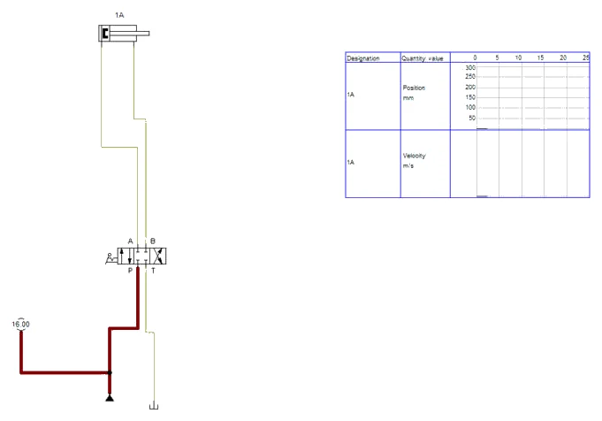
Što simulacija ne pokazuje
FluidSIM ovdje ne računa zagrijavanje ulja — porast temperature iz pitanja 7 računa se ručno. Pitanje 8 (jednosmjerni prigušni ventil u vodu A) riješite na papiru; shema s prigušnim ventilom nije dio ovog rješenja.
B4 · Pitanja i zadaci
1. Računski zadatak: koliki je najmanji promjer klipa za 75 kN pri 160 bar i ηhm = 0,95? Koji normirani promjer odabirete i kolika je njegova stvarna sila?
Prikaži rješenje
A = F / (p · ηhm) = 75 000 N / (16 N/mm² · 0,95) = 4934 mm²; D = √(4 · 4934 / π) = 79,3 mm. Odabire se Ø80 mm: A = 5027 mm² = 50,27 cm². Teorijska sila: 16 · 5027 = 80 425 N ≈ 80,4 kN; stvarna: 80,4 · 0,95 ≈ 76,4 kN > 75 kN.
2. Računski zadatak: koliki je stvarni protok crpke i kolike su brzine izvlačenja i uvlačenja cilindra Ø80/50 mm? Zadovoljava li brzina izvlačenja zahtjev?
Prikaži rješenje
Qt = 16 cm³ · 1450 min⁻¹ = 23 200 cm³/min = 23,2 l/min; Q = 23,2 · 0,95 ≈ 22,0 l/min. Prstenasta površina Ar = π · (80² − 50²) / 4 = 3063 mm² = 30,63 cm². vizv = 22,0 / (6 · 50,27) = 0,073 m/s = 73 mm/s ≥ 70 mm/s — zadovoljava. vuvl = 22,0 / (6 · 30,63) = 0,120 m/s = 120 mm/s. Vremena hoda: 300 / 73 ≈ 4,1 s i 300 / 120 = 2,5 s.
U FluidSIM-u
Simulacija potvrđuje proračun: izvlačenje oko 4,1 s pri 0,073 m/s, uvlačenje oko 2,5 s pri 0,12 m/s (Slika B2.6).
3. Računski zadatak: koliki protok teče kroz povratni filtar pri izvlačenju, a koliki pri uvlačenju? Zašto se filtar ne smije odabrati prema protoku crpke?
Prikaži rješenje
Pri izvlačenju iz prstenaste komore izlazi Q · Ar / A = 22,0 · 30,63 / 50,27 ≈ 13,4 l/min. Pri uvlačenju iz komore klipa izlazi Q · A / Ar = 22,0 · 50,27 / 30,63 ≈ 36,1 l/min — 1,64 puta više od protoka crpke. Filtar odabran za 22 l/min imao bi pri uvlačenju prevelik pad tlaka, a obilazni ventil filtra otvarao bi se i propuštao nefiltrirano ulje.
U FluidSIM-u
U simulaciji se veći povratni protok pri uvlačenju vidi kao viši tlak na manometru: 0,53 MPa pri uvlačenju prema 0,12 MPa pri izvlačenju (Slike B2.2 i B2.5).
4. Računski zadatak: izračunajte hidrauličku snagu pri 160 bar i potrebnu snagu elektromotora. Koji motor odabirete?
Prikaži rješenje
Ph = p · Q / 600 = 160 · 22,04 / 600 ≈ 5,88 kW (uz Q = 0,95 · 23,2 = 22,04 l/min). Pm = 5,88 / 0,8 ≈ 7,35 kW. Odabire se prvi veći standardni motor: 7,5 kW.
5. Računski zadatak: izračunajte unutarnje promjere usisnog voda (1 m/s), tlačnog voda (4 m/s) i povratnog voda (2,5 m/s, mjerodavan protok iz zadatka 3).
Prikaži rješenje
d = √(4 · Q / (π · v))
Usisni: Q = 22 l/min = 0,000367 m³/s; d = √(4 · 0,000367 / (π · 1)) = 0,0216 m ≈ 21,6 mm → 25 mm. Tlačni: d = √(4 · 0,000367 / (π · 4)) ≈ 10,8 mm → 12 mm. Povratni: Q = 36,1 l/min = 0,000602 m³/s; d = √(4 · 0,000602 / (π · 2,5)) ≈ 17,5 mm → 20 mm. Usisni vod je najveći jer crpka ne smije kavitirati.
6. Koliki je volumen spremnika prema pravilu „trostruki protok u minuti“ i koja je svrha tolikog volumena? Koliko se razina ulja spusti kad se cilindar potpuno izvuče?
Prikaži rješenje
3 · 22 ≈ 66 l, odabire se spremnik 63 l (bliži standardni volumen, uz provjeru zagrijavanja). Volumen omogućuje smirivanje ulja, izdvajanje zraka i taloženje nečistoća te odvođenje topline kroz stijenke. Pri izvlačenju u cilindar ulazi A · s = 50,27 · 30 = 1,51 l, a izlazi Ar · s = 0,92 l, pa u spremniku nedostaje razlika od 0,59 l (volumen klipnjače) — razina se malo spusti, što treba uzeti u obzir pri određivanju najniže razine.
7. Kad bi razvodnik imao srednji položaj sa zatvorenim svim priključcima umjesto tandem položaja, crpka bi u mirovanju tlačila cijeli protok preko sigurnosnog ventila. Kolika bi se snaga pretvarala u toplinu i koliko bi se brzo zagrijavalo ulje u spremniku 63 l (ρ = 0,87 kg/l, c = 1,9 kJ/(kg·K), bez odvođenja topline)?
Prikaži rješenje
Snaga gubitka P = 160 · 22,04 / 600 ≈ 5,88 kW, cijela u toplinu. Masa ulja m = 63 · 0,87 ≈ 54,8 kg. Porast temperature: ΔT/Δt = P / (m · c) = 5,88 / (54,8 · 1,9) ≈ 0,056 K/s ≈ 3,4 K/min. Za manje od 10 minuta ulje bi se zagrijalo za oko 30 K. Zato se kod crpki stalne istisnine koristi rasterećenje crpke u mirovanju (tandem položaj ili ventil za rasterećenje).
U FluidSIM-u
U simulaciji (Slika B3.1, datoteka PIH_V28_zatvoreni_srednji_v01.ct) manometar u mirovanju pokazuje 16,00 MPa — crpka cijelo vrijeme tlači preko sigurnosnog ventila.
8. Dopunite shemu na slici V28.1: gdje biste ugradili prigušni ventil da se brzina izvlačenja može smanjiti na 30 mm/s bez utjecaja na brzinu uvlačenja? Opišite put ulja.
Prikaži rješenje
U vod A između razvodnika i cilindra ugrađuje se jednosmjerni prigušni ventil (prigušnica s paralelnim nepovratnim ventilom) tako da pri izvlačenju ulje prema cilindru teče kroz prigušnicu, a pri uvlačenju iz cilindra slobodno kroz nepovratni ventil. Višak protoka crpke pri izvlačenju tada odlazi preko sigurnosnog ventila pri 160 bar, uz velik gubitak snage. Za trajni rad bolji je trograni regulator protoka, koji višak vraća u spremnik pri tlaku malo višem od tlaka tereta, a prigušivanje na odlazu (u vodu B) daje mirnije gibanje kad teret vuče klip.
Zapis simulacije
Tablica Zapis: simulacija iz radnog lista, popunjena prema simulaciji u FluidSIM-P 4.2 i FluidSIM-H 4.2 (rješenje).
| Veličina | Očekivano (proračun / zadatak) | FluidSIM | Komentar |
|---|---|---|---|
| Ispravan sklop V27 (A) | samodržanje K1, povrat na 1S2 | isto (Slike A2.1–A2.3) | H1 svijetli u početnom položaju |
| Kvar 1 (A) | cilindar miruje | K1 drži, 1Y1 bez struje (Slika A3.1) | prekid K1–1Y1 |
| Kvar 2 (A) | relej titra | isto (Slike A3.2 i A3.3) | u simulaciji klipnjača „puže” |
| Tlak u mirovanju, tandem (B) | gotovo 0 bar | 0,10 MPa = 1 bar (Slika B2.1) | otpor razvodnika |
| Vrijeme izvlačenja (B) | 4,1 s (73 mm/s) | oko 4,1 s (Slika B2.6) | bez opterećenja |
| Vrijeme uvlačenja (B) | 2,5 s (120 mm/s) | oko 2,5 s (Slika B2.6) | omjer ≈ 1,64 = A / Ar |
| Tlak na kraju hoda (B) | 160 bar | 16,00 MPa (Slika B2.3) | otvara sigurnosni ventil |
| Zatvoreni srednji položaj (B) | 160 bar u mirovanju | 16,00 MPa (Slika B3.1) | oko 5,9 kW u toplinu |
Spremanje i predaja
- File → Save As. U polje Naziv datoteke upišite
PIH_2026-2027_Prezime_Ime_V10.ct(bez kvačica) i kliknite Spremi. Kasnije spremanje: File → Save (Ctrl + S). - Snimka: za vrijeme simulacije (nakon Pause) snimite zaslon sa shemom i dijagramom put–korak (u sustavu Windows: Windows + Shift + S), ili shemu spremite naredbom File → TIFF Export.
- Ispunite radni list (proračuni i zapis simulacije).
- Predajte u sustav za e-učenje: shemu
.ct, snimku zaslona simulacije i ispunjen radni list. Sve datoteke imenujtePIH_2026-2027_Prezime_Ime_….
Primjena na vlastiti zadatak P##
Projekt SL-3, vaša varijanta P## (ulazni podaci u „Projektni zadaci P01–P21”): za električnu shemu SL-3 pripremite dva kvara po uzoru na V27 (prekinut vodič i pogrešan kontakt), za svaki zapišite simptom, „mjerenje” u FluidSIM-u, uzrok i zahvat, i predajte ih kao zasebne datoteke .ct.
Kod pitanja: susjed → radni list i ova stranica → nastavnik. AI smijete koristiti uz navođenje što je i kako napravljeno.
Za nastavnika
Dio A · vježba V27
Otvori upute za nastavnika
Priprema
Spojite ispravan sklop na svakoj radnoj ploči i provjerite ga cijelim ciklusom. Zatim, dok studenti nisu prisutni, pripremite prvi kvar. Svaka skupina dobiva tri do četiri kvara jedan za drugim, od lakših prema težima; za svaki kvar predvidite 10–15 minuta. Kvarove ne izvodite oštećivanjem opreme. Za skriveni prekid vodiča koristite unaprijed pripremljen i označen neispravan laboratorijski vodič. Evidentirajte koji je kvar na kojoj ploči.
| Kvar | Kako ga pripremiti | Simptom | Kako se otkriva |
|---|---|---|---|
| 1. Prekid u stazi 2 | neispravan vodič između K1 i 1Y1 | K1 drži, 1Y1 ne svijetli | MT5 = 0 V, donji priključak K1 = 24 V |
| 2. STOP na radnom kontaktu | S2 spojen na NO priključke | ništa ne reagira na S1 | MT2 = 0 V, MT1 = 24 V |
| 3. Samodržanje na mirnom kontaktu | K1 u paraleli spojen na NC | relej titra nakon uključivanja | nestabilan napon na MT3 |
| 4. Granična sklopka izvan dosega | 1S2 pomaknuta 10 mm naprijed | cilindar ostaje izvučen | ručni pritisak na 1S2 vraća cilindar |
| 5. Zamijenjeni vodovi 2 i 4 | cijevi zamijenjene na cilindru | u mirovanju izvučen, na S1 se uvlači | P2 = 6 bar u mirovanju |
| 6. Zatvoren prigušni ventil | prigušni vijak u vodu 2 potpuno zatvoren | 1Y1 svijetli, cilindar miruje | P2 i P3 oba blizu 6 bar |
| 7. Nizak tlak | regulator namješten na 1,5 bar | cilindar se giba sporo, ne gura paket | P1 = 1,5 bar |
| 8. Senzor 1B1 bez napajanja | smeđi vodič senzora odspojen | H1 ne svijetli, sklop radi | LED senzora ne svijetli, MT6 = 0 V |
Tijek sata
- Uvod: sustavni postupak, polovljenje, mjerenje napona prema 0 V, pravila sigurnosti pri mjerenju pod naponom (15 min).
- Pokazni primjer: nastavnik pred skupinom traži jedan kvar i glasno govori svaki korak (10 min).
- Rad skupina: tri do četiri kvara s popunjavanjem zapisnika (55 min).
- Rasprava: koji je kvar bio najteži i zašto, usporedba vremena skupina (10 min).
Očekivani rezultati
Skupina pronalazi i otklanja najmanje tri kvara, a zapisnik za svaki sadrži mjerenja koja su dovela do uzroka. Studenti prvo odvajaju električni od pneumatskog dijela (utikač 1Y1, ručno upravljanje), a u stazi mjere polovljenjem. Računski: 4 mjerenja polovljenjem, ≈ 24 Ω, ≈ 2,96 Nl/min i ≈ 710 m³ godišnje.
Česte pogreške
- Nasumično prespajanje vodiča bez mjerenja — kvar „nestane“, ali nitko ne zna gdje je bio.
- Mjerenje napona između dviju točaka staze umjesto prema 0 V, pa se rezultat pogrešno tumači.
- Zaključak „razvodnik je neispravan“ bez provjere ručnim pomoćnim upravljanjem.
- Nakon otklanjanja provjerava se samo gibanje naprijed, ne i povratak, STOP i H1.
- Zapisnik se piše naknadno, bez stvarnih izmjerenih vrijednosti.
Vrednovanje
| Kriterij | Bodovi |
|---|---|
| Sustavni postupak (vidljiv u zapisniku: simptom, pretpostavka, mjerenja) | 6 |
| Pronađeni i otklonjeni kvarovi (po 2 boda za kvar, najviše 3 kvara) | 6 |
| Provjera cijelog ciklusa nakon zahvata | 2 |
| Točni računski zadaci | 3 |
| Sigurnost pri mjerenju pod naponom i tlakom | 3 |
| Ukupno | 20 |
Dio B · vježba V28
Otvori upute za nastavnika
Priprema
Pripremite list s formulama i praktičnim oblicima (bar, cm², l/min). Na vježbenoj ploči unaprijed spojite agregat, razvodnik i cilindar kako bi mjerenje vremena hoda trajalo najviše 15 minuta; zapišite istisninu crpke i promjere cilindra ploče. Studenti trebaju znanje iz jedinica 5.3 i 6.1. Za brže skupine pripremite dodatni zadatak: ista preša s crpkom 25 cm³/okr — što se mijenja?
Tijek sata
- Uvod: zahtjevi za prešu, redoslijed proračuna, praktični oblici formula (10 min).
- Koraci 1–4: cilindar, sila, protok, brzine (25 min).
- Koraci 5–7: povratni protok, snaga, spremnik, vodovi (25 min).
- Mjerenje vremena hoda na ploči i usporedba s omjerom površina (15 min).
- Rasprava o zagrijavanju i pregled rezultata (15 min).
Očekivani rezultati
| Veličina | Rezultat |
|---|---|
| Potreban promjer / odabrani cilindar | 79,3 mm / Ø80/50 mm |
| Sila pri 160 bar (teorijska / stvarna) | 80,4 kN / 76,4 kN |
| Protok crpke (teorijski / stvarni) | 23,2 l/min / 22,0 l/min |
| Brzina izvlačenja / uvlačenja | 73 mm/s / 120 mm/s |
| Povratni protok pri izvlačenju / uvlačenju | 13,4 l/min / 36,1 l/min |
| Hidraulička snaga / snaga motora | 5,88 kW / 7,35 kW → motor 7,5 kW |
| Spremnik / usisni / tlačni / povratni vod | 63 l / 25 mm / 12 mm / 20 mm |
Na vježbenoj ploči omjer vremena izvlačenja i uvlačenja odstupa od omjera površina do 10 %, zbog propuštanja i promjene broja okretaja pod opterećenjem.
Česte pogreške
- Miješanje jedinica: bar i N/mm² (1 bar = 0,1 N/mm²), cm² i mm², l/min i m³/s.
- Brzina uvlačenja računa se s površinom klipa umjesto s prstenastom površinom.
- Povratni filtar dimenzionira se prema protoku crpke.
- Snaga motora računa se bez stupnja djelovanja ili se stupanj djelovanja množi umjesto dijeli.
- Odabire se prvi manji normirani promjer jer je „blizu“ izračunatom.
Vrednovanje
| Kriterij | Bodovi |
|---|---|
| Promjer cilindra i sile | 3 |
| Protok, brzine i vremena hoda | 4 |
| Povratni protok s obrazloženjem za filtar | 3 |
| Snaga i odabir motora | 3 |
| Spremnik i promjeri vodova | 3 |
| Mjerenje na ploči i usporedba s proračunom | 2 |
| Urednost proračuna, ispravne jedinice | 2 |
| Ukupno | 20 |
Napomena za FluidSIM
Gotove sheme za usporedbu su gore na stranici. U FluidSIM-H zadani hidraulički otpor konfigurabilnog razvodnika (0,01 MPa/(l/min)²) pri 22 l/min daje pad tlaka gotovo 50 bar, pa tandem položaj ne bi pokazao rasterećenje crpke i uvlačenje bi išlo djelomice preko sigurnosnog ventila; u rješenju je otpor smanjen na 0,0002. Manometar u FluidSIM-H pokazuje MPa. Simulacija hidraulike teče u stvarnom vremenu, pa interval dijagrama (0–25 s) mora obuhvatiti cijeli ciklus s ručnim prebacivanjem. Za dio A vrijedi isto kao u postupcima V07–V09: vod koji FluidSIM povede uz element F6 javlja kao Lines through components ili Superimposed lines.